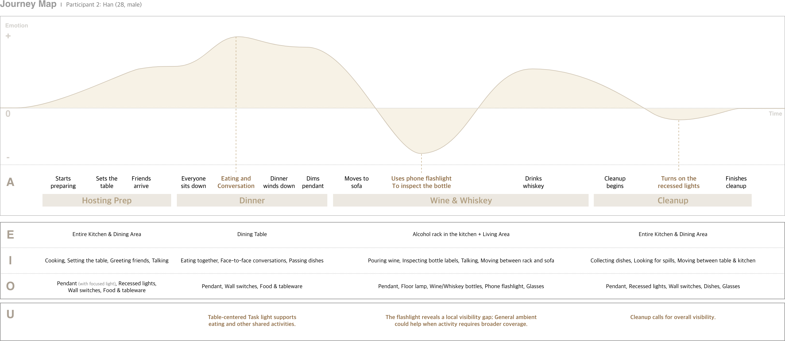
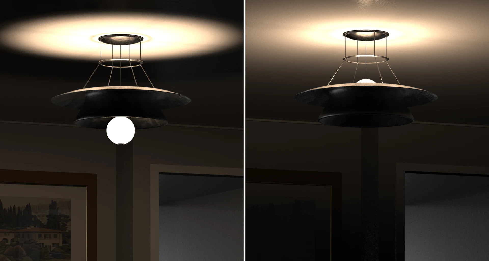
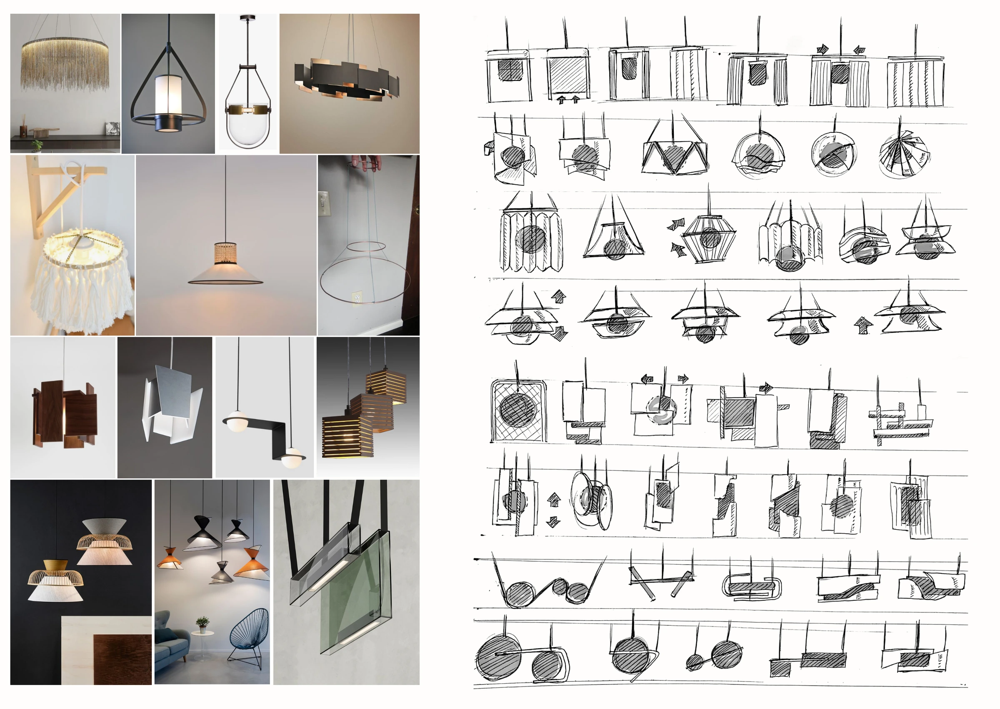
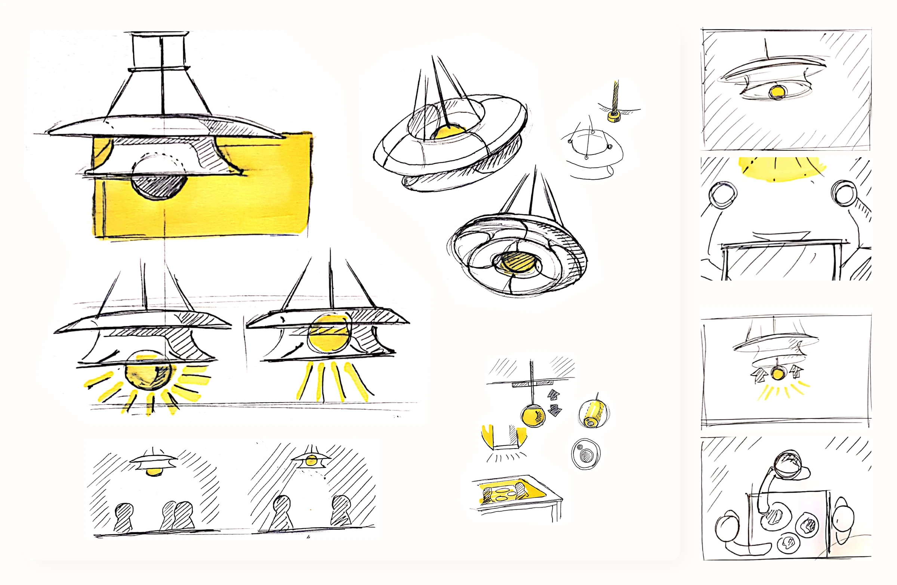
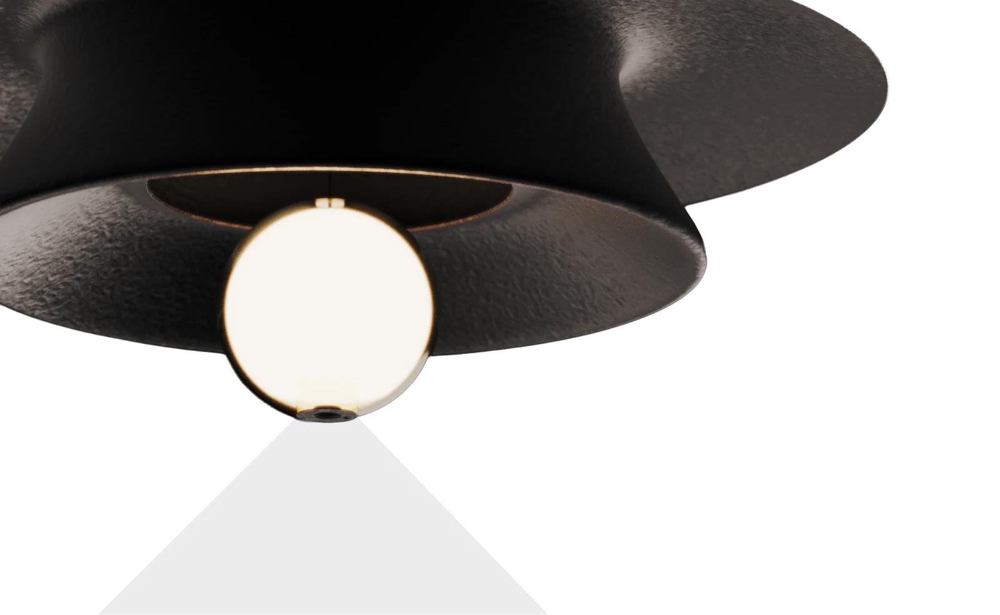
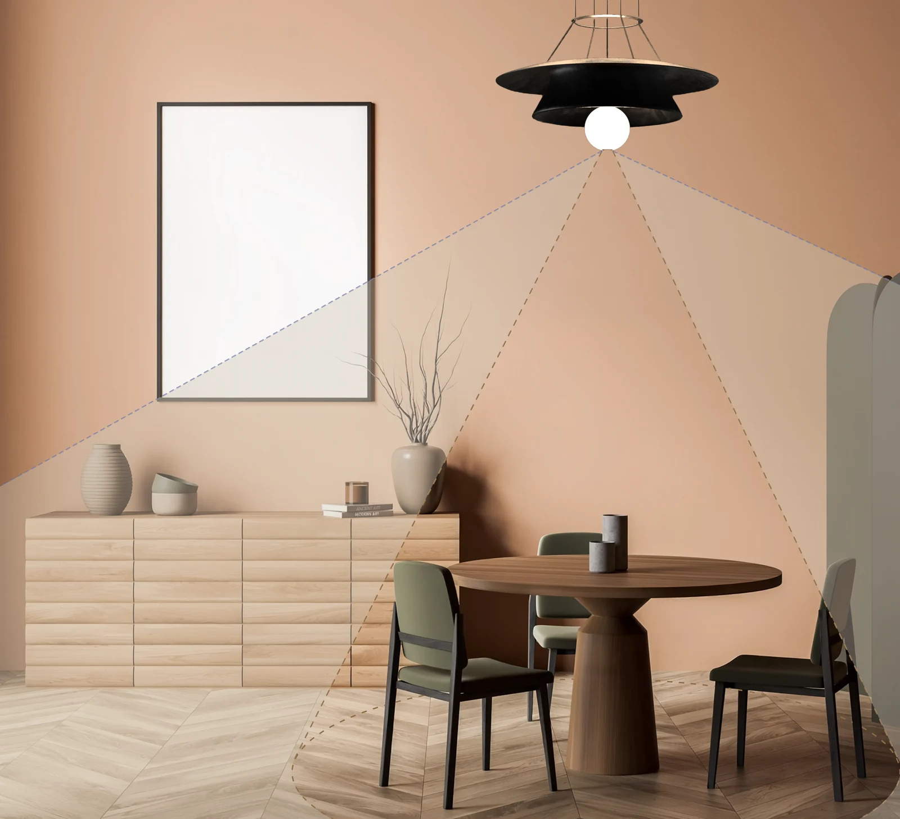

01 / General Ambient
Broader visibility as activity spreads.
Preparation and cleanup extended activity beyond the table, revealing a need for broader dining-area visibility. The relevant cue was the area used over time.
Industrial design · 2020
As activities move between the table and its surroundings, Silverlining explores two light distributions through the movement of one source.

01 / Motivation
A pool of light can make a table feel like a room within a room. Light reaching beyond it can bring the surroundings back into view. Without moving a wall, light can change where we gather and how a space feels. Yet everyday life rarely stays within one boundary. We settle around a table—alone, in pairs, or in groups—step away, and return.
02 / Desk research
Light can make a room easier to use, create a place to linger, or draw attention to a detail. We mapped fixture types, light distributions, and lighting roles to explore how light supports these different needs.
Scroll horizontally to explore the three groups.
Selected possible relationships, not fixed assignments. A role can be supported by several distributions, and one fixture can combine them.
For this project, ambient lighting is divided into General Ambient for everyday visibility and Mood Ambient for atmosphere. These roles can overlap; brightness and surroundings also shape the result.
(IES definitions: Luminaire, Ambient lighting, Task lighting, and Accent lighting. Application examples: ERCO — Vertical and horizontal illumination; ERCO — Wallwashing and grazing light)
Changing a light's distribution could let a lighting
support different uses of the same space.
03 / User study
2 exploratory interviews · 1 journey map
As people gather, stay, and move, the area in use shifts, prompting us to explore how lighting needs change with it.
Interviews explored what people explicitly wanted from their lighting. Journey mapping traced activities, movement, and lighting adjustments over time to identify needs that were less directly expressed.
Interview
I think I'd like the light to match
the area we're actually using.
Lighting should match the area in use, supporting individual and shared activities without unnecessarily brightening the surroundings.
It's great in one spot. Change areas, though,
and I'm turning lights on myself
Moving between areas should require less manual adjustment of lighting, while preserving visibility and the desired atmosphere.
Approximately 35–40 minutes · Materials: Paper for sketching the space, note-taking materials.
Research objective. Understand how lighting needs change as people use the same space for different activities, and whether their existing lighting and controls meet those needs.
Introduction · 2 minutes
“We’re interested in how you use the space around your table and how you experience the lighting there. We’d like to hear about situations that worked well, as well as anything you wanted to change. There are no right or wrong answers, and you can skip any question.”
Ask for consent before recording or photographing the space.
7 minutes
Could you describe how this space is arranged?
Ask the participant to show or sketch the table, seating, windows, and lights. Mark where they usually sit, stand, or move around.
Think about a recent day. What did you use this space for?
Choose two different activities they mention and explore them in sequence. Ask who was present, where each person was, and what they were doing.
Tell me about the most recent time you used this space with someone else.
Explore where people stayed, whether they moved around, and whether they were doing the same activity or different things. Skip this question if there is no relevant experience.
12 minutes
When one activity changed into another, what, if anything, did you change in the space?
Listen for changes the participant mentions spontaneously. If lighting does not come up, follow up by asking which lights were on at the time.
How did the lighting work for what you were doing?
Ask what worked well and what, if anything, did not. Follow general descriptions such as “too dark” or “a nice atmosphere” with questions about where they were and what they were trying to see or do.
What led you to change the lighting—or leave it as it was?
Ask what they actually did and what happened afterward. If they left the lighting unchanged, explore their reason without assuming they wanted something different.
Can you recall a recent time when the same lighting worked well for different activities?
Explore what made it work. Compare the circumstances with any less satisfactory experience they described.
10 minutes
In the situation you found less satisfactory, what would you have wanted to be different?
Ask the participant to indicate the relevant areas on the sketch. Let them describe the change first. If needed, follow up about brightness, the area receiving light, shadows, or glare.
Have you tried anything to address that situation?
Ask what they actually tried and whether it helped. Explore what was resolved and what remained. If they did not try anything, ask why.
Have you experienced a situation where someone sharing the space wanted different lighting from you?
Ask where each person was, what they were doing, how their preferences differed, and how they reached a decision. Record experiences without disagreement too.
5 minutes
Of the experiences we discussed, which would make the biggest difference if it changed?
Explore why it matters, how often it happens, and how it affects everyday activities. Accept “nothing needs to change” as a valid response.
Have I understood your experience correctly?
Briefly summarize the situations, lighting experiences, and responses the participant described. Ask what you misunderstood or left out.
Journey map
Scroll horizontally to compare the four contexts.
| 01 Hosting Prep | 02 Dinner & Conversation | 03 At the Bottle Rack | 04 Cleanup | |
|---|---|---|---|---|
| Context | Cooking, setting the table, and greeting guests. | Eating, talking, and sharing dishes around the table. | Inspecting a bottle beyond the table's light. | Clearing dishes and checking for spills across the dining area. |
| Lighting in use | General AmbientPendant + recessed lights | TaskPendant on | TaskPendant on; phone flashlight added | General AmbientRecessed lights switched on |
| Insight | Activity extends beyond the table. | Gathered presence suggests table-centered light. | Adapting light still takes manual effort. | |
Preparation involves moving across the dining area, making broader visibility useful. |
When people gather around the table, concentrating light there is enough for supporting eating and conversation. |
At the rack, the participant added a phone flashlight; for cleanup, they switched on recessed lights. Both situations required manual intervention to obtain useful visibility, suggesting an opportunity for automatic adjustment as the use of the space changes. |
||

Presence patterns offer a starting point for adapting light to the space in use. These accounts led us to explore presence as a primary cue: whether people remain around the table or use its surroundings. Presence indicates where light may be useful; the activity and desired atmosphere also shape the response.
04 / Design opportunity
People were not simply asking for a brighter room. They wanted light where it was useful, an atmosphere that suited the moment, and fewer adjustments as the area in use changed. The interviews and journey map pointed to three connected opportunities.
01 / General Ambient
Preparation and cleanup extended activity beyond the table, revealing a need for broader dining-area visibility. The relevant cue was the area used over time.
02 / Task + Mood Ambient
Clear tabletop lighting mattered, but the whole room did not always need to be bright. This led us to explore focused tabletop light with a soft ambient background.
03 / Adaptive adjustment
The gaps (At the rack, Cleanup) led us to explore presence-based adaptation that reduces manual adjustment while allowing people to retain a preferred setting.
A light that automatically shifts between two configurations—
General Ambient and Task + Mood Ambient—using presence as a cue.
05 / Design response
Silverlining is a pendant light designed to automatically adapt its light distribution as people use the table and its surroundings. A globe moves vertically within a layered shade, shifting between focused tabletop light with a soft ambient background and broader illumination across the surrounding area.

Unveil / Source lowered
The globe lowers beneath the shade, exposing the source to spread light more broadly downward and outward. This configuration explores lighting for activities that extend beyond the table.
Veil / Source raised
The globe rises into the shade, creating a narrower downward component and broad upward light. Light reflected from the ceiling is intended to contribute ambient illumination.
06 / In use
Silverlining is designed to shift between light gathered around the table and a broader glow across its surroundings. As activities unfold, the experience balances where light is needed with the atmosphere people want to keep.
Preparing a meal or clearing the table brings the surrounding space into use. In Unveil, the globe lowers to spread light more broadly, extending illumination beyond the tabletop.
In Veil, light concentrates on the tabletop while an upward component reflects off the ceiling. Reading and lingering in conversation can find their place within the same setting.
A brief step in or away need not change the whole room. The proposed interaction holds the current setting through short movements.
This browser could not play the film. Download the video.
07 / Development
The need for broader visibility and a clear table within a relaxed room led us to explore how one pendant could support both. We focused on the relationship between source and shade: how could their relative positions shape the reach of light and make the change between settings visible?

Form sketches explored different ways of enclosing and exposing a source through changes in the shade, its openings, and the source’s position. The relationship between source and shade offered a way to translate changing spatial needs into a physical configuration.

We developed a globe that moves vertically within a layered shade. Lowering it exposes more of the source, allowing light to spread toward the surrounding area. Raising it brings the source within the shade, shaping a narrower downward component while leaving an upward path for light to reflect from the ceiling. These two positions became Unveil and Veil, connecting broader visibility with the combination of tabletop light and a soft ambient background.
08 / Technical approach
A camera and embedded computer are proposed within the 170 mm globe. Person detections would be interpreted across near-table and surrounding zones over time, guiding changes between Veil and Unveil while allowing people to hold their preferred setting.

A central assembly would house the compute board, with LEDs around its perimeter and a camera facing down through a separate aperture. The arrangement reserves space for connections and heat transfer.

The camera image would be calibrated into a near-table zone and a surrounding dining-area zone. These regions provide a cue for choosing the light distribution; sofa occupancy would not, by itself, request broader dining-area light.
Proposed switching rules · Thresholds and timing to be tested.
| Observed pattern | Proposed response |
|---|---|
| Sustained near-table presence, with little surrounding activity | Veil |
| Sustained presence in the surrounding zone, including when others remain at the table | Unveil |
| Brief movement through a zone or across its boundary | Hold the current mode. |
| No reliable person detections | Hold briefly, then return to Veil after a chosen timeout. |
| Manual mode hold or globe in motion | Pause automatic switching. |
YOLOv4-tiny is proposed for person detection. A separate decision layer would interpret where detections occur and how long they persist, rather than infer an activity or a preferred atmosphere from presence alone.
This review informs a proposed architecture.
Physical integration, thermal performance, detection accuracy, and interaction behavior remain untested.components available in 2020
The Raspberry Pi Camera Module 2, released in 2016, measures approximately 25 × 24 × 9 mm. Its standard lens has a 62.2° horizontal and 48.8° vertical field of view, according to the official specifications.
The Jetson Nano module measures 69.6 × 45 mm; a carrier board, connectors, and cooling add to its footprint. NVIDIA’s 2019 platform introduction also documents Camera Module 2 support. These components provide candidates for integration within the 170 mm globe, rather than proof that a complete assembly fits. Nano’s 5 W / 10 W modes describe its computing power budget, not the total power required by the lamp.
A cylindrical internal structure could accommodate the rectangular computing boards, with LEDs arranged around it and the camera attached below. The spatial study must include the carrier board, wiring, diffuser thickness, camera window, and moving mechanism. The central structure could also block light or cast shadows across the globe.
The LED assembly and computing unit each need a deliberate path for heat to leave the enclosure; arranging them together does not establish adequate cooling. NVIDIA’s power and thermal guidance and Lumileds’ LED thermal guidance inform this review. No safe operating temperature or cooling performance has been demonstrated for the proposed assembly.
The near-table zone includes the table and its seating positions. The surrounding zone covers selected dining-area locations outside it, excluding the sofa area rather than treating everything beyond the table as a trigger for Unveil. Both are calibrated regions within one camera image. The lens field of view describes what can enter that image; useful detection coverage also depends on mounting height, occlusion, lighting, and the visibility of people. The illustrated coverage is an intention, not a measured detection boundary.
Because the camera moves with the globe, the table’s apparent size and position change between Veil and Unveil. Each position would require a calibrated zone map. Detection-based switching would pause during movement and resume after the camera reaches a stable position.
YOLOv4-tiny is a compact object detector proposed for the Jetson Nano. Its June 2020 release announcement reports inference on Nano using tkDNN/TensorRT, supporting its selection as a candidate for on-device processing. Runtime compatibility and thermal performance would still need validation in the assembled lamp.
It would detect people; separate logic would assign detections to zones and evaluate their persistence over time. Detection confidence is not a person count, and the proposal does not subtract two confidence scores to select a mode.
Sustained presence in the surrounding zone could request Unveil, including when others remain at the table. Short passages would retain the current mode, and a manual hold would take priority. Confidence thresholds, dwell times, and mixed-zone behavior need testing. Returning to Veil after no reliable detections is a fallback rule, not proof of absence. Person detection also does not establish intent or a preferred atmosphere. No YOLOv4-tiny speed or accuracy has been measured on the proposed Nano configuration.
09 / Reflection — Sep. 2026
Silverlining explored how one light could adapt to changing use of a space. Looking back, I see both the limits of the concept and a clearer path toward building and evaluating it.
Physical implementation. I wish I had taken Silverlining beyond a concept into an integrated working prototype. Observing people using a working prototype would have been essential to evaluating the experience. Without this, the proposed benefits of automatic adaptation remain untested.
Expanded Possibilities. Since Silverlining was conceived in 2020, advances in AI have expanded the ways different cues can be combined and interpreted. Time of day, preferences learned through interaction histories, and visual cues about activities could complement presence. These offer additional materials for shaping the intended experience.
Borader user research. The exploratory study suggested a direction, but did not establish how widely it would apply. A broader survey could help identify differences in living arrangements and lighting preferences.